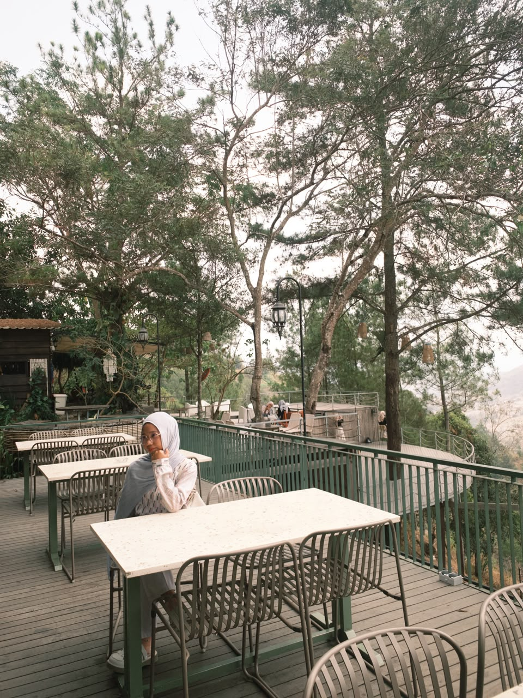
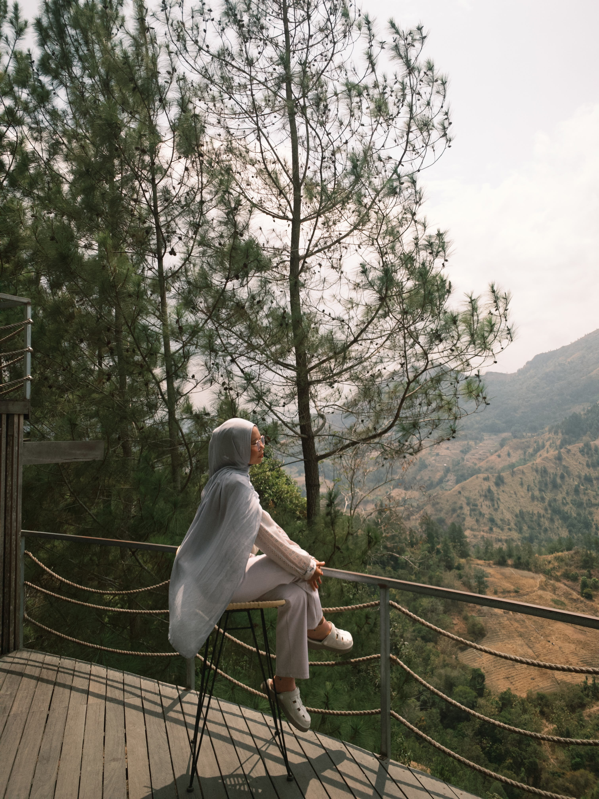
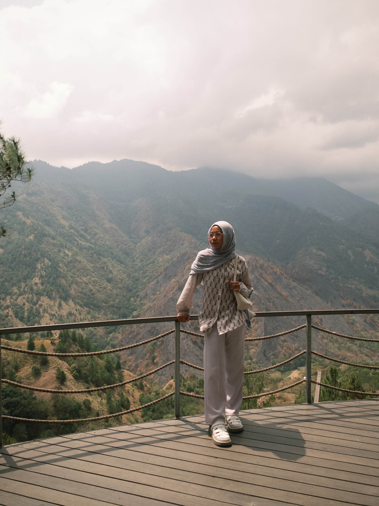

Informasi Utama Destinasi
Makna Nama & Filosofi Destinasi
Nama Dante Pine merupakan perpaduan bahasa lokal Massenrempulu dan bahasa Inggris:
- "Dante" diambil dari bahasa lokal Enrekang yang bermakna "halaman depan rumah".
- "Pine" diambil dari bahasa Inggris yang bermakna "pohon pinus".
Secara filosofis, nama ini mencerminkan keramahan tuan rumah yang menyambut para pelancong layaknya tamu di pekarangan depan rumah berpagar jajaran pohon pinus yang sejuk dan damai. Objek wisata ini mulai dikembangkan sejak tahun 2016 oleh inisiatif komunitas pemuda lokal yang ingin memberdayakan potensi lanskap alam Enrekang.
Konsep & Karakteristik Wilayah
- Ekowisata Berbasis Keluarga
- Lanskap & Panorama Geologis
- Iklim & Suasana
Berbeda dengan destinasi alam terpencil lainnya, Dante Pine dirancang ramah keluarga tanpa merusak kontur asli perbukitan pinus. Tersedia area bermain aman untuk anak-anak serta teras dek kayu yang nyaman untuk orang tua dan lansia.
Berada tepat di hadapan bentang alam Buntu Kabobong (Gunung Nona), yaitu formasi tebing batuan karst unik yang menjadi ikon Kabupaten Enrekang. Posisi ini menjadikannya salah satu titik pandang terbaik di jalur Trans-Sulawesi.
Terletak di dataran tinggi, kawasan ini memiliki suhu harian yang sejuk, sering diselimuti kabut tipis di pagi dan menjelang malam hari, serta aroma khas getah pinus yang menenangkan.
Daya Tarik Unggulan
- Wahana Ekstrem Bersertifikasi
- Camping Ground Berundak
- Wisata Gastronomi Lokal
Menjadi salah satu pelopor wahana ketinggian di Sulawesi Selatan, termasuk Flying Fox lintasan panjang (hingga ratusan meter), Zip-Bike (sepeda di atas kawat melayang di ketinggian ±10 meter), dan Tarzan Swing yang berayun bebas ke arah jurang terbuka.
Area perkemahan dibuat dengan konsep terasering bertingkat di bawah naungan pohon pinus, memberikan privasi antar tenda sekaligus pemandangan lembah tanpa terhalang.
Kawasan ini dilengkapi kedai kopi dan resto dengan konsep terbuka yang menyajikan kopi Arabika khas Enrekang (Kopi Kalosi/Benteng Alla) serta kuliner tradisional, diiringi suasana santai teras kayu.
Galeri Tempat Wisata
|
|
|
|
|
 |
 |
 |
Daftar Aktivitas
- Wahana Adrenalin:
- - Menjajal Tarzan Swing (ayunan jurang ekstrem), Zip-Bike (sepeda gantung di atas tali kawat), dan Flying Fox lintasan panjang.
- Camping & Glamping:
- - Bermalam di area perkemahan rindang di bawah tegakan pinus dengan fasilitas colokan listrik dan persewaan tenda.
- Bersantai & Kulineran:
- - Menikmati kopi hangat lokal khas Enrekang dan kuliner santai di teras resto tepi tebing.
- Area Playground:
- - Wahana permainan ramah anak yang dirancang untuk rekreasi keluarga.
Lokasi Wisata
Alamat Lengkap: Jl. Poros Enrekang - Toraja, Kelurahan Tanete, Kecamatan Anggeraja, Kabupaten Enrekang, Sulawesi Selatan.
Aksesibilitas: Berada tepat di sisi jalan utama poros trans-Sulawesi (jalur utama Makassar–Tana Toraja), sekitar 5–6 jam perjalanan darat dari Kota Makassar atau sekitar 30–45 menit dari pusat Kota Enrekang.
Tabel Informasi
| Kategori | Rincian/Keterangan |
|---|---|
| Tiket Masuk Reguler | Rp10.000 – Rp15.000 / orang |
| Tiket Paket Camping | Mulai Rp30.000 – Rp40.000 / orang (bawa tenda sendiri) |
| Sewa Tenda & Matras | Rp100.000 – Rp250.000 / unit (tergantung kapasitas) |
| Tarif Wahana Ekstrem | Rp20.000 – Rp50.000 / wahana (Zip Bike, Tarzan Swing) |
| Jam Operasional | Setiap hari, pukul 09.00 – 20.30 WITA |
| Fasilitas Umum | Area parkir, musala, toilet, resto/kafe, colokan listrik area camp, gazebo |
Formulir Pemesanan
Multimedia
Video Drone Dante Pine Enrekang: